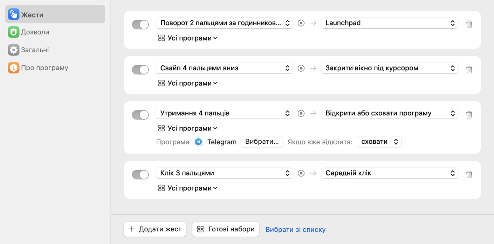
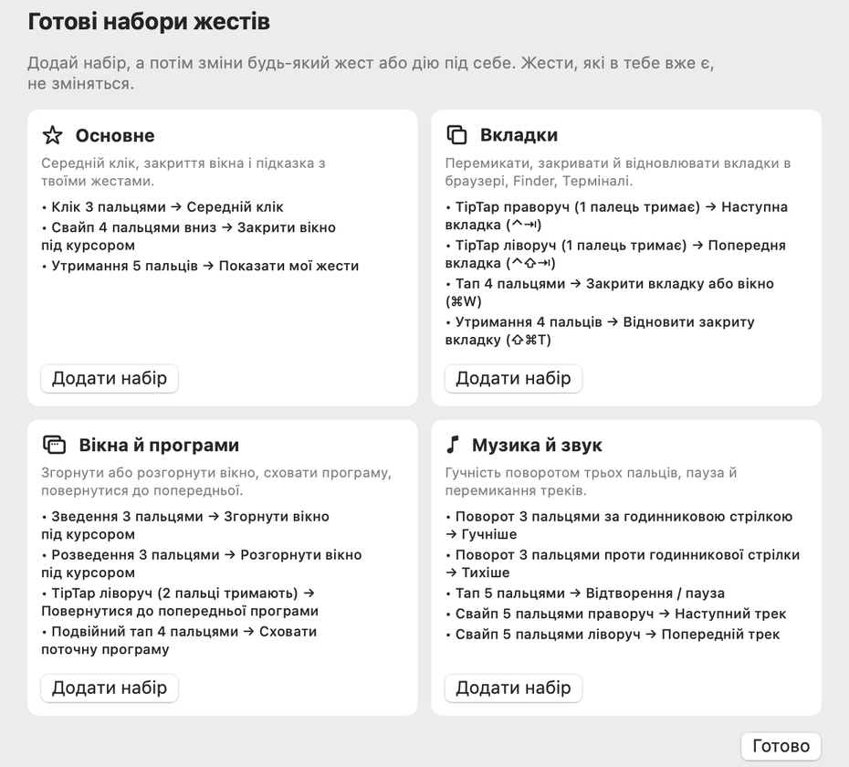

Ваш трекпад уміє більше.
Tapko перетворює тапи, свайпи, щипки й утримання на дії, які ви робите щодня. Клік середньою кнопкою, закрити вікно, відкрити Telegram. У будь-якій програмі.
7 днів Pro безплатно · macOS 14 Sonoma або новіша · Вбудований трекпад і Magic Trackpad
Один жест — на один клік менше.
Кілька жестів, які зазвичай налаштовують першими.
Маленька програма. Великі можливості.
Tapko живе в рядку меню й не заважає, доки ваші пальці чогось не попросять.
Жести
Кліки, тапи, подвійні тапи, свайпи, щипки, повороти, утримання, TipTap, тапи в кутах і свайпи від краю.
Дії
Середня кнопка; закрити, згорнути або розгорнути вікно під курсором; будь-яке сполучення клавіш; відкрити або сховати програму; Mission Control, медіаклавіші, Швидкі команди, AppleScript.
Запишіть жест
Натисніть «Додати жест» і зробіть його на трекпаді. Tapko покаже, що розпізнав, перш ніж щось виконати.
Правила для програм
Той самий жест може закривати вкладку в Safari і надсилати повідомлення в Telegram.
Підказки клавіш
Tapko читає меню ваших програм і пропонує їхні сполучення клавіш, тож їх не треба запам’ятовувати.
Приватно від початку
Усе працює на вашому Mac. Без облікового запису, без стеження, жодні дані нікуди не надсилаються.
Готово за хвилину.
Почніть із готового набору або складіть свій.
Встановіть і дозвольте
Перемістіть Tapko у «Програми» й увімкніть його в «Приватність і безпека» → «Універсальний доступ».
Оберіть набір
«Основне», «Вкладки», «Вікна й програми» або «Музика й звук». Змінюйте що завгодно.
Просто користуйтеся
Забули жест? Утримання п’яти пальців покаже всі ваші жести на екрані.

Почати — безплатно. Pro — щоб не зупинятися.
Спробуйте всі можливості Pro безплатно 7 днів. Потім заплатіть один раз або залишайтеся на безплатній версії.
Безплатно
- 7 днів Pro у подарунок
- Потім 2 жести одночасно
- Усі 26 дій
- Готові набори
- 11 мов інтерфейсу
Pro
- Скільки завгодно жестів
- Правила для програм
- До 3 комп’ютерів Mac
- Безплатні оновлення
Питання
Навіщо Tapko дозвіл «Універсальний доступ»?
Щоб клацати, натискати клавіші й закривати вікна за вас, macOS вимагає дозволу «Універсальний доступ». Tapko використовує його лише для дій, які ви налаштували.
macOS пише, що не може перевірити Tapko. Що робити?
Tapko поширюється не через App Store, тож під час першого запуску macOS може його заблокувати. Відкрийте «Системні параметри» → «Приватність і безпека», прокрутіть униз і натисніть Усе одно відкрити. Це треба зробити лише раз: оновлення встановлюються без цього.
Чи не заважатиме Tapko системним жестам?
Tapko попереджає, коли жест уже використовує macOS, наприклад свайп трьома пальцями, і відкриває налаштування трекпада, щоб ви могли вимкнути системний.
Чи можна спробувати безплатно?
Так. Кожне нове встановлення отримує всі можливості Pro на 7 днів, без ключа й банківської картки. Далі Tapko працює як безплатна версія з 2 жестами, якщо ви не купите Pro.
Як активувати Pro?
Після покупки ви отримаєте ліцензійний ключ електронною поштою. Вставте його в Tapko → Налаштування → Про програму.
Чи можна повернути гроші?
Так. Якщо Tapko вам не підійде, напишіть протягом 14 днів після покупки, і ми повернемо гроші.